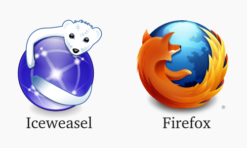

编译自：http://news.softpedia.com/news/debian-is-switching-to-mozilla-firefox-after-a-decade-of-using-iceweasel-501647.shtml
作者： Marius Nestor
原创：LCTT https://linux.cn/article-7101-1.html
译者： wxy
本文地址：https://linux.cn/article-7101-1.html
Debian Stable 将在三个月之后提供 Firefox。
一些 Linux 老用户都知道 Debian GNU/Linux 系统以及它的一些衍生发行版采用 Iceweasel 作为默认浏览器。

Iceweasel 是著名的 Mozilla Firefox 浏览器的一个分叉衍生版本，而 Debian 使用 Iceweasel 已经很久了。大概从 2006 年 2 月开始，Debian 开发者们由于 Firefox Logo 的商标问题，而被迫将 Firefox 重新包装成 Iceweasel。
上个月 Softpedia 就报道过 Debian 开发者可以将他们的 Iceweasel 换回到 Firefox 了，而现在官方宣布了 Firefox 将进入主软件仓库这一消息。
“这比我们预期的要久，不过终究这一天来到了。我已经将 Firefox 和 Firefox ESR （扩展支持版）上传到了 Debian unstable。它们将会通过 Debian NEW 队列过程，因为它们是新的软件包，所以不能马上就可用。不过这也不需要多久”，Iceweasel 维护者 Mike Hommey 解释到。
在 Debian GNU/Linux 中将 Iceweasel 替换为 Firefox 浏览器是一个重大变化，Debian unstable 中的 Iceweasel 软件包会被升级成当前的 Firefox ESR 版本。同样，Debian Stable 也会更新为 Firefox ESR 版本，不过应该要到三个月之后。
但是，还有一个问题，Icedove 什么时候会被替换回 Mozilla Thunderbird ？
编译自：http://news.softpedia.com/news/debian-is-switching-to-mozilla-firefox-after-a-decade-of-using-iceweasel-501647.shtml
作者： Marius Nestor
原创：LCTT https://linux.cn/article-7101-1.html
译者： wxy
本文由 LCTT 原创翻译，Linux中国首发。也想加入译者行列，为开源做一些自己的贡献么？欢迎加入 LCTT！
翻译工作和译文发表仅用于学习和交流目的，翻译工作遵照 CC-BY-NC-SA 协议规定，如果我们的工作有侵犯到您的权益，请及时联系我们。
欢迎遵照CC-BY-NC-SA 协议规定转载，敬请在正文中标注并保留原文/译文链接和作者/译者等信息。
文章仅代表作者的知识和看法，如有不同观点，请楼下排队吐槽 :D
因为没有其他更适合我的选择啊。1绿色圣光 [Firefox 45.0|Android 6.0] 发表于 2016-3-13 23:02 的评论：为什么要换回去啊？2来自广东中山的 Internet Explorer 8.0|Windows 7 用户 发表于 2016-3-16 16:49 的评论：你討厭Android為何還在用?
你討厭Android為何還在用?1绿色圣光 [Firefox 45.0|Android 6.0] 发表于 2016-3-13 23:02 的评论：为什么要换回去啊？
LOGO 的商标问题解决了。不用再次封装了。1绿色圣光 [Firefox 45.0|Android 6.0] 发表于 2016-3-13 23:02 的评论：为什么要换回去啊？
谢谢！1来自福建福州的 Vivaldi 1.0|GNU/Linux 用户 发表于 2016-3-13 17:34 的评论：Mozill
Linux.CN © 2003-2016 Linux中国 | Powered by DX | 图片存储于七牛云存储
京ICP备05083684号-1 京公网安备110105001595
服务条款 | 除特别申明外，本站原创内容版权遵循 CC-BY-NC-SA 协议规定


分享到微信朋友圈
打开微信，点击底部的“发现”，
使用“扫一扫”将网页分享至朋友圈。